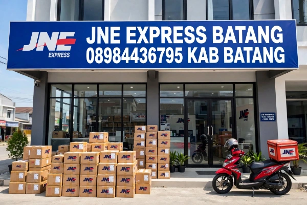

JNE Express Batang
Kabupaten Batang, Jawa Tengah
JNE Batang adalah kantor cabang resmi JNE Express yang melayani seluruh wilayah Kabupaten Batang, Jawa Tengah. Kami siap mengirimkan paket, dokumen, dan barang Anda ke seluruh Indonesia maupun ke luar negeri. Hubungi JNE Batang WA: 0898-4436-795 sekarang!
💬 WhatsApp JNE Batang 📞 Telepon 0898-4436-795Layanan JNE Batang
📦 JNE Reguler Batang
Pengiriman paket standar dari Batang ke seluruh Indonesia. Waktu kirim 2–5 hari kerja dengan tarif terjangkau.
⚡ JNE YES Batang
Layanan cepat — paket dari Batang dijamin sampai keesokan harinya, termasuk hari Minggu & hari libur nasional.
🌏 JNE Internasional
Kirim barang dari Batang ke luar negeri. Jaringan luas, aman, dan terpercaya.
🏪 JNE Pickup Batang
Petugas JNE Batang jemput paket di rumah/kantor Anda tanpa biaya tambahan. Hubungi WA: 0898-4436-795.
Data Kantor JNE Batang
📍 Alamat JNE Batang
JNE Express Batang
Kecamatan Batang, Kabupaten Batang
Jawa Tengah, Indonesia
📞 Kontak JNE Batang
WhatsApp / Telepon:
+62 898-4436-795
🕐 Jam Operasional
Senin – Sabtu: 08.00 – 17.00
Minggu & Hari Libur: Tutup / Layanan Terbatas
✅ Layanan Utama
Pengiriman Paket & Dokumen
Pelacakan Resi
Penjemputan Paket di Batang
Jasa Kemasan
Tentang JNE Batang — Kantor Resmi
JNE Batang adalah kantor cabang resmi JNE Express yang berdedikasi melayani kebutuhan pengiriman warga Kabupaten Batang, Jawa Tengah. Dengan nomor kontak resmi WA 0898-4436-795, kami siap menjadi mitra pengiriman Anda — mulai dari paket pribadi, dokumen penting, hingga kiriman barang dagangan. JNE Batang menjamin layanan yang cepat, aman, dan terjangkau ke seluruh pelosok Indonesia maupun ke mancanegara. Hubungi kami kapan saja melalui WhatsApp atau telepon di nomor 0898-4436-795.